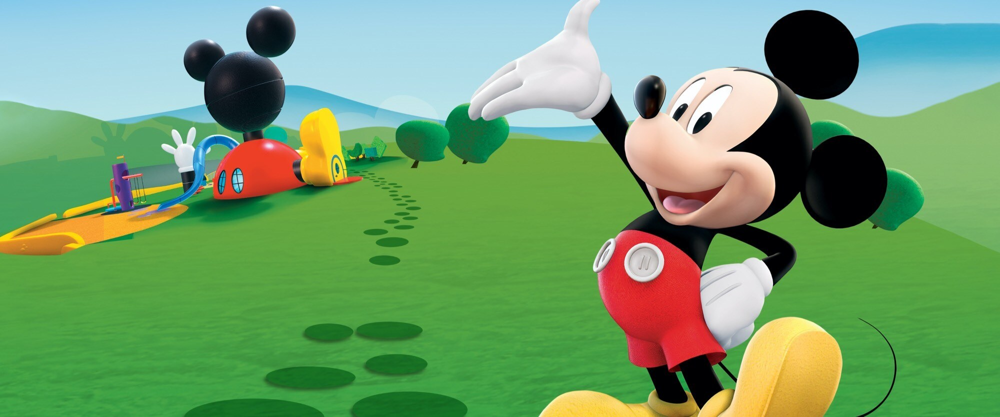
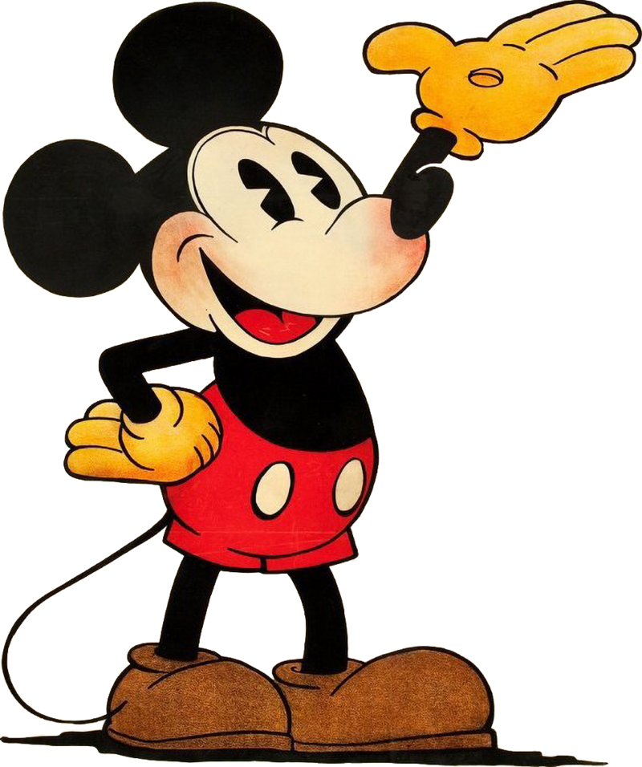
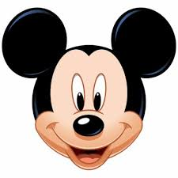
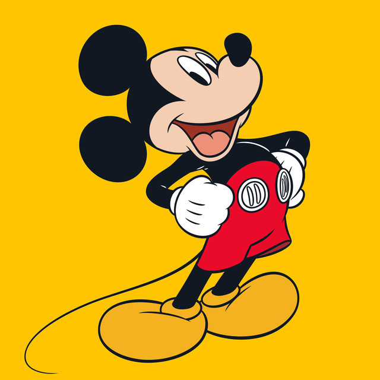
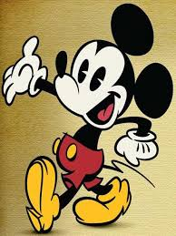

<!DOCTYPE html>
<html lang="en">
<head>
    <meta charset="UTF-8">
    <meta name="viewport" content="width=device-width, initial-scale=1.0">
    <title>Document</title>
    <link rel="stylesheet" href="style.css">
</head>
<body>
    
</body>
</html>

<header>
    
    <h1 id="0">Mundo Encantado do Mickey</h1>
</header>

<div class="content">
    
    <p id="1">
        Mickey Mouse é um dos personagens mais icônicos da história da animação. Criado por Walt Disney em 1928, ele rapidamente se tornou um símbolo da empresa. Com suas grandes orelhas redondas e personalidade encantadora, Mickey conquistou gerações de fãs ao redor do mundoMickey Mouse é um personagem de desenho animado criado por Walt Disney e Ub Iwerks . Um rato antropomórfico alegre e corajoso, Mickey fez sua primeira aparição pública em Steamboat Willie , em 18 de novembro de 1928. Estimado em 2' 3" (68,58 centímetros) e pesando 23 libras (10,43 quilos), Mickey é facilmente identificado por suas orelhas redondas, shorts vermelhos com botões brancos, luvas brancas e sapatos amarelos. Ele fala em falsete, e sua fala é tipicamente infundida com gírias dos anos 1930 como "swell" e "gee". A essência do personagem de Mickey é a de um azarão.
    </p>

    
    <p id="2">
        Ao longo dos anos, Mickey protagonizou diversos desenhos animados, filmes e até peças de teatro. Ele sempre foi acompanhado por seus amigos inseparáveis: Minnie, Pateta, Pato Donald, entre outros. Cada aventura é marcada por humor, valores positivos e muita criatividadeMickey Mouse é um personagem de desenho animado criado por Walt Disney e Ub Iwerks . Um rato antropomórfico alegre e corajoso, Mickey fez sua primeira aparição pública em Steamboat Willie , em 18 de novembro de 1928. Estimado em 2' 3" (68,58 centímetros) e pesando 23 libras (10,43 quilos), Mickey é facilmente identificado por suas orelhas redondas, shorts vermelhos com botões brancos, luvas brancas e sapatos amarelos. Ele fala em falsete, e sua fala é tipicamente infundida com gírias dos anos 1930 como "swell" e "gee". A essência do personagem de Mickey é a de um azarão.
    </p>

    
    <p id="3">
        O impacto cultural de Mickey Mouse é imenso. Seu rosto pode ser encontrado em brinquedos, roupas, utensílios domésticos e até obras de arte. Ele é uma referência mundial de entretenimento e fantasia, mantendo-se relevante mesmo após quase um século de existência.Mickey Mouse é um personagem de desenho animado criado por Walt Disney e Ub Iwerks . Um rato antropomórfico alegre e corajoso, Mickey fez sua primeira aparição pública em Steamboat Willie , em 18 de novembro de 1928. Estimado em 2' 3" (68,58 centímetros) e pesando 23 libras (10,43 quilos), Mickey é facilmente identificado por suas orelhas redondas, shorts vermelhos com botões brancos, luvas brancas e sapatos amarelos. Ele fala em falsete, e sua fala é tipicamente infundida com gírias dos anos 1930 como "swell" e "gee". A essência do personagem de Mickey é a de um azarão
    </p>

    
    <p id="4">
        Além das animações, Mickey Mouse também é o anfitrião principal dos parques temáticos da Disney espalhados pelo mundo. Sua presença é sempre um destaque nas paradas, shows e atrações, encantando crianças e adultos com sua simpatia e carisma. Mickey Mouse é um personagem de desenho animado criado por Walt Disney e Ub Iwerks . Um rato antropomórfico alegre e corajoso, Mickey fez sua primeira aparição pública em Steamboat Willie , em 18 de novembro de 1928. Estimado em 2' 3" (68,58 centímetros) e pesando 23 libras (10,43 quilos), Mickey é facilmente identificado por suas orelhas redondas, shorts vermelhos com botões brancos, luvas brancas e sapatos amarelos. Ele fala em falsete, e sua fala é tipicamente infundida com gírias dos anos 1930 como "swell" e "gee". A essência do personagem de Mickey é a de um azarão
    </p>

    
    <p id="5">
        A evolução do design de Mickey ao longo do tempo reflete as mudanças tecnológicas e estéticas da animação. De seus traços simples em preto e branco, ele passou a ter versões coloridas, em 3D e até em realidade aumentada. Mesmo com todas essas mudanças, sua essência permanece. Mickey Mouse é um personagem de desenho animado criado por Walt Disney e Ub Iwerks . Um rato antropomórfico alegre e corajoso, Mickey fez sua primeira aparição pública em Steamboat Willie , em 18 de novembro de 1928. Estimado em 2' 3" (68,58 centímetros) e pesando 23 libras (10,43 quilos), Mickey é facilmente identificado por suas orelhas redondas, shorts vermelhos com botões brancos, luvas brancas e sapatos amarelos. Ele fala em falsete, e sua fala é tipicamente infundida com gírias dos anos 1930 como "swell" e "gee". A essência do personagem de Mickey é a de um azarão
    </p>

    <p id="6">
        Celebrar o Mickey Mouse é também celebrar a magia da Disney. Ele representa sonhos, imaginação e alegria. Sua história inspira artistas, cineastas e fãs do mundo todo, tornando-o eterno no coração da cultura pop e símbolo da infância de milhões de pessoas. Mickey Mouse é um personagem de desenho animado criado por Walt Disney e Ub Iwerks . Um rato antropomórfico alegre e corajoso, Mickey fez sua primeira aparição pública em Steamboat Willie , em 18 de novembro de 1928. Estimado em 2' 3" (68,58 centímetros) e pesando 23 libras (10,43 quilos), Mickey é facilmente identificado por suas orelhas redondas, shorts vermelhos com botões brancos, luvas brancas e sapatos amarelos. Ele fala em falsete, e sua fala é tipicamente infundida com gírias dos anos 1930 como "swell" e "gee". A essência do personagem de Mickey é a de um azarão
    </p>
</div>

</body>
</html>